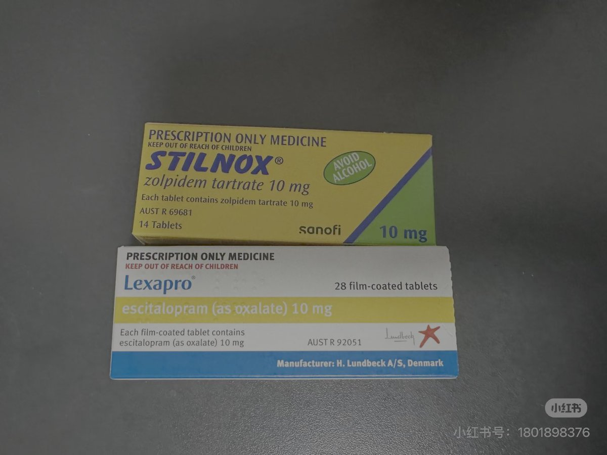

dowond yang
@YangDowond
小红书帖子
博主来到澳大利亚，所带的劳拉西泮和艾斯西酞普兰吃完了，想要在当地的医院开一些，她带着在国内的处方辗转咨询多位医生，医生表示，来士普（艾斯西酞普兰原研药）is ok，但劳拉西泮这种bzd？你滴胆子真是肥嘟嘟地，没门
经过多番问诊和哭诉，以及自述睡眠障碍要死掉力之后，从“人道主义”角度出发，医生被迫爆出了金：14片/盒的思诺思（原研唑吡坦）
从此处大家可以发现抛去街头滥用和瘾品售卖，在西方世界从正规医疗渠道获取bzd究竟是多么困难的事情
